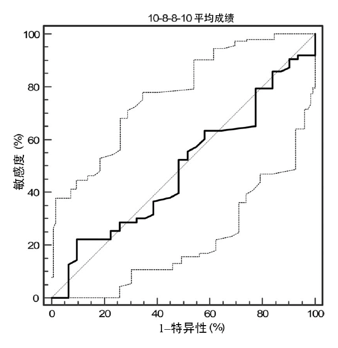

国际裁判管理机构（UEFA、FIFA）已经认识到对精英级助理裁判员进行体能测试的必要性。因此，在执法顶级比赛前，助理裁判员都需要参与一系列的场地测试，以评估其反复冲刺能力（6 x 40 米冲刺测试）和间歇性高强度耐力（30–40 间歇跑测试）33。然而，这些测试虽然都着重强调了助理裁判员的生理特征，但就跑动距离和运动模式来看，测试的表面效度较低33。它们只考虑直线跑动，却忽视了助理裁判员特有的侧向跑动20。而且，它们并未评估助理裁判员在比赛最困难的阶段进行突然变向、重复变向的能力及其所需覆盖的特定距离20。遗憾的是，据笔者所知，目前尚无科学期刊发表过任何一项研究来提出针对助理裁判员的变向能力测试，并检验其效度（表面效度和建构效度）和可靠性。
The 10-8-8-10 test was developed qualitatively by examining the activity pattern of Italian elite-level ARs during official championships. The development of the activity pattern considered in the 10-8-8-10 test was undertaken according to the distance and time reported for the mean sprint coverage in scientific reports published and adjusted for test feasibility to provide consistent data collection (20,21,25). Specifically, forward running was assumed as 10 m according to the average time scored by AR in a preliminary pilot study and usual discrete sprint time revealed by time motion analysis (i.e., 2 seconds) (20). The sideward shuttle-running pattern used in the 10-8-8-10 test was considered as a consequence of the AR’s most frequent action of choice aiming to remain inline with the second last defender. The shuttle running (i.e., involving start and end test on the same line) nature of the 10- 8-8-10 test was chosen for relevance tomatch demands and for test feasibility (i.e., to ease timing).
The 10-8-8-10 test involves the AR sprinting forward for 10 m and rapidly performing two 8-m sideways shuttle runs having as reference the 10-m end line (i.e., change of direction line). Once the two 8-m sideway shuttle runs are completed, the AR sprints back to the start line to complete the 10-8-8-10 test (10 + 8 + 8 + 10 m = 36 m). During the 10-8-8-10 test, the AR must have his or her forward foot stepping on the reference line (i.e., at 10 m at the 8-m lines) at each direction change. Only trials that were performed in compliance with the explained test procedures were considered for analysis. Before the 10-8-8-10 test, all participants were familiarized with the test rules and allowed for practice trials.
Construct validity was assessed comparing 50 AR randomly chosen from the relative competitive cohorts (Serie A-B and Can-Pro, n = 90 and 200, respectively). Construct validity has been used to assess the sensitivity of a test to discriminate between players of different competitive levels (17,24). With these criterion-based validity differences, once detected, are difficult to be explained unless an accurate control over possible intervening variables is exerted (28). To operate control over the possible training effect on test performance in this population of AR, the experimental procedures were intentionally undertaken after the preparation phase of the competitive season. This was done with the aim to account for possible differences in training background affecting physical performance (i.e., 10-8-8-10 test) across the considered competitive levels. During this preparation phase, all the ARs involved undertook a common supervised training program aiming to develop the fitness determinant of match performance (20,25). Compliance with the training procedures was assured with the help of certified AR strength and conditioning coaches appointed by the Italian Soccer Referees Association (AIA). Training load was assumed as time devoted for the development of the following fitness categories: endurance, sprint and agility, repeated-sprint ability, and flexibility (10,11).
Before the commencement of the procedures used in this study, face validity was gained by a questionnaire in which experts (i.e., current and former top-class AR, n = 20) rated the 10-8-8-10 using a 1–5 scale for specificity (i.e., test relevance for AR performance: 1 = trivial, 2 = small, 3 = medium, 4 = large, and 5 = very large). The overall ratings (n = 20) for the 10-8-8-10 were "large" to "very large" (n = 4 and 16 of 20, respectively).
Participants were 100 ARs belonging to the AIA who were appointed for officiating in the 2009–2010 Serie A-B (n = 50, ARA-B, age 37 ± 2.9 years, height 1.78 ± 6.9 cm, body mass 74 ± 6.9 kg) and Lega Pro (n = 50, ARLP, age 34 ± 2.0 years, height 1.77 ± 4.9 cm, body mass 75 ± 4.9 kg) Italian professional championships. The ARs had at least 2 years (range 2–8 years) of experience at their respective competitive level (i.e., Serie A-B and Lega Pro, respectively) and performed at least 3 training sessions a week for the development of specific fitness. All ARs were tested during the training camp held at the end of the precompetitive season (i.e., July–August). To avoid undue stress on the AR in the days preceding the implementation of the 10-8-8-10 test, training loads were intentionally reduced, and familiarization sessions were considered. The ARs were advised to maintain a regular diet during the day before testing (i.e., 60, 25, and 15% of carbohydrates, fat, and protein, respectively) and to refrain from smoking and caffeinated drinks during the 2 hours preceding testing. To avoid hypohydration, ARs were allowed to drink fluids "ad libitum". Written informed consent was obtained from all the participants after familiarization and explanation of the benefit and risks involved in the procedures of this study. All participants were informed that they were free to withdraw from the study at any time without penalty. The Institutional Research Board (Settore Tecnico AIA, Modulo per la preparazione Atletica) provided clearance for the procedures before the commencement of this study. All procedures were carried out in accordance with the Declaration of Helsinki of the World Medical Association as regards the conduct of clinical research.
All the test procedures were performed at the same hours of the day (i.e., 9–11 AM) in the absence of wind and in similar environmental conditions (i.e., 23–26°C, 50–60% humidity). The 10-8-8-10 test was performed at the end of a standard warm-up consisting each time of 15 minutes of slow jogging (i.e., 2–3 of Börg’s CR 10 scale) followed by static stretching (5 minutes) and agility and sprint practice (8 minutes) (1,7). The AR performed 3 trials of the 10-8-8-10 test interspersed by 2 minutes of passive recovery in between. All tests were performed on the same synthetic turf usually used for fitnesstraining sessions. The 10-8-8-10 test performance was assumed as total time and assessed using a telemetric photocells system (Polifemo Kit Racetime2, Microgate, Bolzano, Italy). To avoid undue switch-on of the timing system, ARs had to position the front foot immediately before a line set 0.50 m from the photocell beam. The photocell beam was positioned at 0.5-m height and 1.5 m apart. All the ARs performed the 10-8-8-10 test with a self-administered start, and maximum performance was induced through strong verbal encouragements by the test leader (i.e., first author) during all the test duration.
The 10-8-8-10 test reliability was established by having ARs (n = 64) performing the test under the above declared conditions on 3 different occasions separated by a recovery (a low training load session) day. Best and average 10-8-8-10 performances were used for calculation.
The results are expressed as mean ± SD and 95% confidence intervals (95% CIs). Normality assumption was verified using the Shapiro–Wilk W-test. Student’s t-tests (unpaired design) were used to determine any significant difference between the 2 competitive levels (i.e., ARA-B and ARLP). Homogeneity of variance was tested with the Bartlett test. The effect size (ES) was calculated to assess meaningfulness of differences (8). Effect sizes of >0.8, between 0.8 and 0.5, between 0.5 and 0.2, and <0.2 were considered as large, moderate, small, and trivial, respectively. The intraclass correlation coefficient (ICC) was used to assess relative reliability of the 10-8-8-10 test. Absolute reliability was assessed calculating the typical error of measurement (TEM) according to Hopkins (15). Sensitivity of the 10-8-8-10 test was evaluated using receiver operating characteristic curve (ROC) statistics. To allow ROC calculations, ARs were dichotomized according to their competitive level (i.e., ARAB and ARLP). Normative data were reported as interquartile range (31). The smallest
worthwhile change was assumed as 0.2I according to Hopkins at al. (16). Significance was set at 5% (p ≤ 0.05).
The ARsA-B were significantly older than ARLP (p < 0.0001; 95 CI% -4.10 to -2.10; ES = 1.25). There were no significant differences between the ARA-B and ARLP groups for the percentage of time spent training for endurance, sprint and agility, and repeated sprint ability during the pretest preparation phase (i.e., 6 weeks). The percentage of time spent training for endurance, sprint and agility, and repeated sprint ability was 68 ± 5.1 and 67 ± 6.8% (p = 0.34, 95% CI -0.78–1.78; ES = 0.17), 15 ± 4.6 and 14 ± 5.8% (p = 0.22, 95% CI -0.81–1.81; ES = 0.19), and 10 ± 4.3 and 9 ± 6.8% (p = 0.44, 95% CI -0.6 to 1.6; ES = 0.18) of the total training time for the ARA-B and ARLP groups, respectively. Percentage of time devoted to flexibility training was significantly higher in ARLP than in ARA-B (9 ± 1.8 and 7 ± 1.8 %, p = 0.04, 95% CI 1.3–2.7, ES = 0.32).
The mean best 10-8-8-10 test time for the ARA-B and ARLP was 9.61 ± 0.45 and 9.66 ± 0.41 seconds, respectively (p = 0.57; 95% CI -0.13 to 0.23; ES = 0.11; n = 100). The performance in the 10-8-8-10 test assumed as the mean of all trials was 9.81 ± 0.41 and 9.78 ± 0.41 seconds for ARA-B and ARLP, respectively (p = 0.72; 95% CI -0.21 to 0.14; ES =
0.07; n = 100).
Mean, median, and mode of the 10-8-8-10 test pooled data (i.e., ARA-B plus ARLP) were 9.74 ± 0.34 seconds (95% CI 9.67–9.81), 9.79 (95% CI 9.67–9.84), and 9.64 seconds for the mean of the 3 trials, respectively. The corresponding values for the 10-8-8-10 test best performance pooled data were 9.60 ± 0.36 (95% CI 9.52–9.67), 9.63 (95% CI 9.54–9.70), and 9.48 seconds.
Receiver operating characteristic analysis showed that
10-8-8-10 performance was insensitive in detecting competitive-level differences in this population of ARs as revealed by the area under the curve size (AUC = 0.49, p = 0.87; 95% CI 0.38–0.60; Figure 1).

Figure 1. Receiver operating characteristic (ROC) plot for the 10-8-8-10 test performance assuming competitive level as dichotomous variable (i.e., Serie A-B vs. Lega Pro; n = 50, respectively). Area under the curve (AUC = 0.49, p = 0.87; 95%CI 0.38–0.60). Black line = ROC curve.
The ICC for the 10-8-8-10 test was 0.90 (n = 64, p < 0.0001, 95% CI 0.84–0.93). The across trials TEM was of 0.21 (95% CI 0.18–0.24) and 0.18 seconds (95% CI 0.16–0.21) for trial 1 vs. 2 and trial 2 vs. 3, respectively.
The smallest worthwhile change for the 10-8-8-10 test (pooled data, n = 100) was of 0.07 seconds using either the mean or the best of the pooled (i.e., ARA-B and ARC) values.
The interquartile range values for the 10-8-8-10 scores were 9.57 seconds (95% CI 9.39–9.64) and 9.94 seconds (95% CI 9.85–10.09) for the 25 and 75% percentiles, respectively (Figure 2).
Figure 2. Distribution of 10-8-8-10 scores. Vertical black dotted lines represent the limit of the 25 and 75% percentiles.
This is the first study to examine the applicability (i.e., construct validity and reliability) of a CODA test in elite-level ARs. The results of this study showed that the 10-8-8-10 test did not discriminate between ARs of different competitive levels and to possess good short-term reliability. Furthermore, the 10-8-8-10 test showed to have high face validity considered as perceived test relevance (i.e., from large to very-large relevance) by a panel of experienced AR authorities. Consequently, this original investigation represents the first step in the identification and assessment of a valid and reliable AR COD test.
Construct validity is usually assumed as a prerequisite of test applicability in sport science (28). Indeed with this aspect of criterion-based validity, authors usually examine the sensitivity of a test in discriminating between athletic populations belonging to different competitive levels assumed as construct (18). This criterion-based validity feature is assumed as a viable strategy to performance prediction and talent selection and identification in sport science (17,19,23). Furthermore, it is suggested to provide valuable information for training prescription when dealing with youth and elitelevel athletes (29,30). Despite the interest of this aspect of criterion-based validity, detection of construct validity does not provide evidence of cause and effect relationships "per se" (19,28). Indeed construct validity when assuming qualitative criteria for conceptualization (i.e., elite vs. nonelite level) may not provide a clear reflection of the supporting cause of status difference. Specifically, the competitive status may be the consequence of difference in skill level, training background, and or genetic factors (29). Consequently, to gain meaningful information from this particular aspect of criterion-based validity, the items determining the construct definition must be carefully set (19,28). In this research design, we operated control over construct (i.e., competitive level) supporting variables testing 2 population of AR (i.e., ARA-B and ARLP) after the completion of a similar training program. This was undertaken with the very intention to experimentally account for differences in training background because of competitive-level membership. Indeed in Italy, ARs reach the semiprofessional status only when affiliation with the higher national competitive level is awarded (Serie A and B), and this considerably impacts the training load in terms of frequency of weekly training sessions, volume, and intensity (32,34). As a result, differences in test performance may be the consequence of superior training effort and is reasonably considered as test bias in talent identification conduct.
To account for training bias for construct validity of 10-8-8-10 test, we assumed control over short-term (i.e., 6 weeks) preexperimentation training background for the AR groups considered in this study. Analysis of training loads assumed as percentage of time devoted to physiological abilities considered as determinants of elite-level AR performance (i.e., Endurance, Sprint and Agility, Repeated Sprint Ability and Flexibility) showed no significant differences between all the considered physical abilities except flexibility (10,11,20,25). This provided support to the experimental purpose of implementing similar training stimuli to the 2 competitive level different AR populations.
Results showed that no significant difference between means was detected for the 10-8-8-10 test performance across competitive levels (i.e., ARA-B vs. ARLP). The absence of competitive-level sensitivity of the 10-8-8-10 test was further supported by ROC analysis that showed balance between sensitivity and specificity as represented by the AUC value (= 0.49). In soccer, refereeing competitive-level progression parallels age progression because experience is considered as an attribute of skill development in elite level soccer refereeing (5,27). Consequently, impairment in physical performance as a result of aging may be expected in soccer refereeing (3,6). A number of studies have shown that age-related impairment in physical performance is expected in the neuromuscular performance domain as soccer officials get older in the progression of their competitive careers (3,5,27). In this study, despite a significant older mean age of ARA-B, no significant differences were detected in CODA mainly considered as a neuromuscular physical ability (2,26). Furthermore, no significant association between age and the 10-8-8-10 test performance was detected when examining pooled data (n = 100, r = 0.03, p = 0.74, 95% CI 20.16 to 0.23). This contrasts with previous studies that addressed the effect of age on speed and explosive strength in FR (3,6). Although comparison between studies is difficult to be performed as different designs were used, it could be speculated that control over training loads may have had an effect over the lack of difference in neuromuscular performance (i.e., 10-8-8-10 test) between competitive levels in this study (3,6).
This evidence suggests that the 10-8-8-10 test may be successfully used to detect CODA of AR across the competitive levels and considered as a reflection of individual abilities. This is of particular interest in soccer refereeing as fitness tests have shown to be affected by competitive-level associated variables such as training background and age (3,4,6,35). The findings of this study suggest that the 10-8-8-10 test performance may be considered as a trainable physical ability and that competitive-level independent normative may be considered in AR assessment. However, training studies examining the effect of CODA training load nature, volume, and intensity on 10-8-8-10 performance are warranted.
The 10-8-8-10 showed good absolute and relative reliability as reported by ICC and TEM calculations, respectively. Specifically, the 10-8-8-10 performance showed short-term variation (i.e., every other day testing) in the order of approximately 0.19 seconds (n = 66). This absolute variation in performance was higher (i.e., ~0.19 vs. 0.07 seconds) in size than the minimum worthwhile change estimated as fraction of pooled data SD (i.e., 0.20 x SD). It could be suggested that to detect meaningful information as per size of the effect of the intervention change, a higher proportion of SD should be used. Indeed, considering the estimation of the minimum worthwhile change instead of small effect (i.e., ES = 0.20) medium to large effect size (i.e., ES from 0.5 on), the test noise can be exceeded providing likelihood for more plausible changes.
Despite the encouraging results of this study, the implementation of our findings as an evaluation criterion of CODA of elite level ARs should be corroborated by further studies providing evidence for sensitivity as consequence of intervention (i.e., training studied) and seasonal variations of the 10-8-8-10 test (17,19). Normative values should be extended by examining 10-8-8-10 test performance in AR of a different age (i.e., younger), competitive levels (i.e., junior level), and gender (i.e., male vs. female ARs). Studies addressing a possible relationship between 10-8-8-10 test performance and the AR ability to keep last defender off-side line are warranted. Nonetheless, despite the relevance of COD for AR match performance, its assessment is overlooked in the current FIFA AR fitness test protocol.With this in mind, this original investigation represents the first step in the identification and assessment of a valid and reliable AR COD test. Given the strength of our findings, governing bodies should look to integrate the 10-8-8-10 test into the fitness test protocols devised for ARs, with scores ≥9.67 being considered as a starting point for the empirical validation of minimum selection criteria for elite-level ARs.
The CODA is considered as an important prerequisite to promote specific agility in ARs (13,14,20,25). In this regard, the 10-8-8-10 possessing logical validity and good reliability may be successfully used to track changes in CODA performance in trained ARs at the beginning of the competitive season. Furthermore, the 10-8-8-10 test considering sideways shuttle running may be used to train AR in developing the physical prerequisite useful to track offside situation during the match.
Because of short-term variation in 10-8-8-10 performance (~0.18 seconds), difference in performance ≥0.18 seconds can be considered as meaningful. Performance changes ≥0.07 seconds and <0.18 seconds should be considered with caution. The same consideration should be used when considering interindividual differences for ranking difference. Given the population addressed in this study, the 10-8-8-10 test values reported here may be considered as reference normative values for highly competitive-level ARs before the beginning of the competitive season (22). For AR populations similar to those in this study, the 10-8-8-10 test scores ≤9.67 seconds should be considered as of interest. This information may be considered to be of importance for national and international soccer referees governing bodies aiming to implement and assess agility training programs for elite ARs.
Börg, G. Borg’s Perceived Exertion and Pain Scales. Champaign, IL: Human Kinetics, 1998.
Brughelli, M, Cronin, J, Levin, G, and Chaouachi, A. Understanding change of direction ability in sport: A review of resistance training studies. Sports Med 38: 1045–1063, 2008.
Casajus, JA and Castagna, C. Aerobic fitness and field test performance in elite Spanish soccer referees of different ages. J Sci Med Sport 10: 382–389, 2007.
Castagna, C, Abt, G, and D’Ottavio, S. Competitive-level differences in Yo-Yo intermittent recovery and twelve minute run test performance in soccer referees. J Strength Cond Res 19: 805–809, 2005.
Castagna, C, Abt, G, and D’Ottavio, S. Physiological aspects of soccer refereeing performance and training. Sports Med 37: 625–646, 2007.
Castagna, C, Abt, G, D’Ottavio, S, and Weston, M. Age-related effects on fitness performance in elite-level soccer referees. J Strength Cond Res 19: 785–790, 2005.
Chaouachi, A, Castagna, C, Chtara, M, Brughelli, M, Turki, O, Galy, O, Chamari, K, and Behm, DG. Effect of warm-ups involving static or dynamic stretching on agility, sprinting, and jumping performance in trained individuals. J Strength Cond Res 24: 2001–2011, 2010.
Cohen, J. Statistical Power Analysis for the Behavioral Sciences. Hillsdale, NJ: Lawrence Erlbaum Associates, 1988.
D’Ottavio, S and Castagna, C. Analysis of match activities in elite soccer referees during actual match play. J Strength Cond Res 15: 167–171, 2001.
Esteve-Lanao, J, Foster, C, Seiler, S, and Lucia, A. Impact of training intensity distribution on performance in endurance athletes. J Strength Cond Res 21: 943–949, 2007.
Esteve-Lanao, J, San Juan, AF, Earnest, CP, Foster, C, and Lucia, A. How do endurance runners actually train? Relationship with competition performance. Med Sci Sports Exerc 37: 496–504, 2005.
Féderation Internationale de Football Association. Laws of the Game 2005. Zurich, Switzerland: Féderation Internationale de Football Association, 2005.
Helsen, Wand Bultynck, JB. Physical and perceptual-cognitive demands of top-class refereeing in association football. J Sports Sci 22: 179–189, 2004.
Helsen, W, Gilis, B, and Weston, M. Errors in judging "offside" in association football: Test of the optical error versus the perceptual flash-lag hypothesis. J Sports Sci 24: 521–528, 2006.
Hopkins, WG. Measures of reliability in sports medicine and science. Sports Med 30: 1–15, 2000.
Hopkins, WG, Marshall, SW, Batterham, AM, and Hanin, J. Progressive statistics for studies in sports medicine and exercise science. Med Sci Sports Exerc 41: 3–13, 2009.
Impellizzeri, FM, Rampinini, E, Castagna, C, Bishop, D, Ferrari Bravo, D, Tibaudi, A, andWisloff, U. Validity of a repeated-sprint test for football. Int J Sports Med 29: 899–905, 2008.
Impellizzeri, FM, Rampinini, E, Castagna, C, Bishop, D, Ferrari Bravo, D, Tibaudi, A, andWisløff, U. Validity of a repeated-sprint test for football. Int J Sports Med 29: 899–905, 2008.
Impellizzeri, FM and Marcora, SM. Test validation in sport physiology: Lessons learned from clinimetrics. Int J Sports Physiol Perform 4: 269–277, 2009.
Krustrup, P, Mohr, M, and Bangsbo, J. Activity profile and physiological demands of top-class soccer assistant refereeing in relation to training status. J Sports Sci 20: 861–871, 2002.
Mallo, J, Navarro, E, Garcia-Aranda, JM, Gilis, B, and Helsen, W. Analysis of the kinematical demands imposed on top-class assistant referees during competitive soccer matches. J Strength Cond Res 22: 235–242, 2008.
Montgomery, PG, Pyne, DB, Hopkins, WG, and Minahan, CL. Seasonal progression and variability of repeat-effort line-drill performance in elite junior basketball players. J Sports Sci 26: 543–550, 2008.
Mujika, I, Santisteban, J, Impellizzeri, FM, and Castagna, C. Fitness determinants of success in men’s and women’s football. J Sports Sci 27: 107–114, 2009.
Rampinini, E, Sassi, A, Azzalin, A, Castagna, C, Menaspa, P, Carlomagno, D, and Impellizzeri, FM. Physiological determinants of Yo-Yo intermittent recovery tests in male soccer players. Eur J Appl Physiol 108: 401–409, 2010.
Reilly, T and Gregson, W. Special populations: The referee and assistant referee. J Sports Sci 24: 795–801, 2006.
Sheppard, JM and Young, WB. Agility literature review: Classifications, training and testing. J Sports Sci 24: 919–932, 2006.
Stølen, T, Chamari, K, Castagna, C, and Wisløff, U. Physiology of soccer: An update. Sports Med 35: 501–536, 2005.
Thomas, JR, Nelson, JK, and Silverman, J. Research Methods in Physical Activity (5th ed.). Champaign, IL: Human Kinetics, 2005.
Vaeyens, R, Lenoir, M, Williams, AM, and Philippaerts, RM. Talent identification and development programmes in sport: Current models and future directions. Sports Med 38: 703–714, 2008.
Vaeyens, R, Malina, RM, Janssens, M, Van Renterghem, B, Bourgois, J, Vrijens, J, and Philippaerts, RM. A multidisciplinary selection model for youth soccer: The Ghent Youth Soccer Project. Br J Sports Med 40: 928–934, 2006.
Vincent, WJ. Statistics in Kinesiology. Champaign, IL: Human Kinetics, 1995.
Weston, M, Bird, S, Helsen, W, Nevill, A, and Castagna, C. The effect of match standard and referee experience on the objective and subjective match workload of English Premier League referees. J Sci Med Sport 9: 256–262, 2006.
Weston, M, Castagna, C, Helsen, W, and Impellizzeri, F. Relationships among field-test measures and physical match performance in elite-standard soccer referees. J Sports Sci 27: 1177–1184, 2009.
Weston, M, Castagna, C, Impellizzeri, FM, Rampinini, E, and Breivik, S. Ageing and physical match performance in English Premier League soccer referees. J Sci Med Sport 13: 96–100, 2010.
Weston, M, Helsen, W, MacMahon, C, and Kirkendall, D. The impact of specific high-intensity training sessions on football referees’ fitness levels. Am J Sport Med 32: S54–S61, 2004.